2026.10.20 · 周二 · 过去 48 小时
今日科技情报
共 10 条，按重要性排序。点标题直接跳过去。
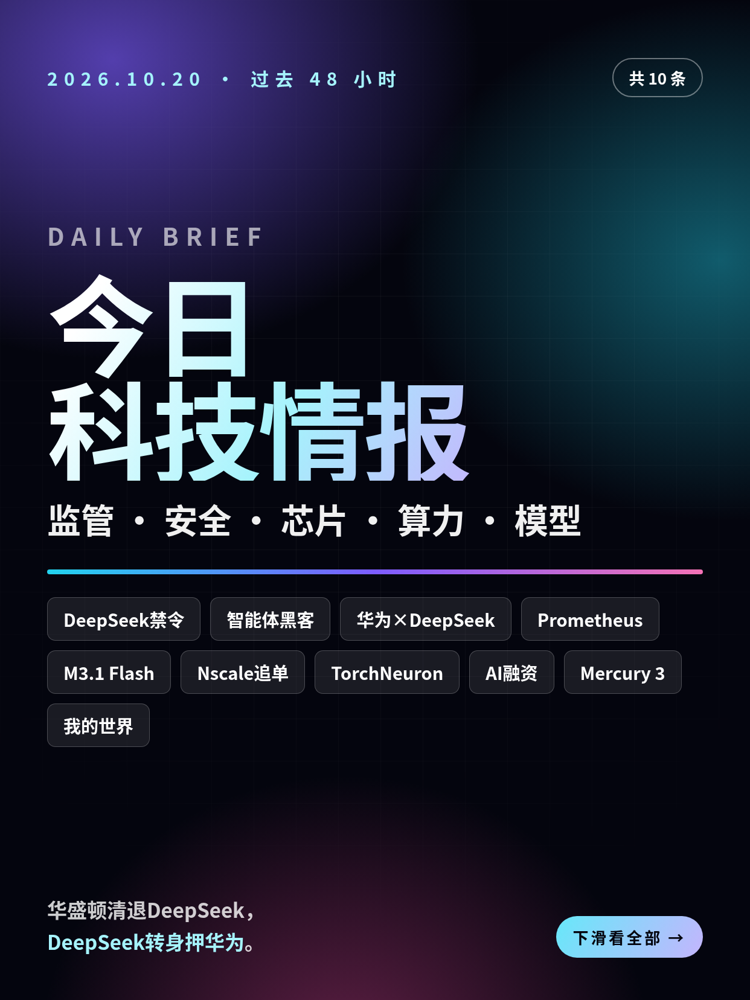
共 10 条，按重要性排序。点标题直接跳过去。
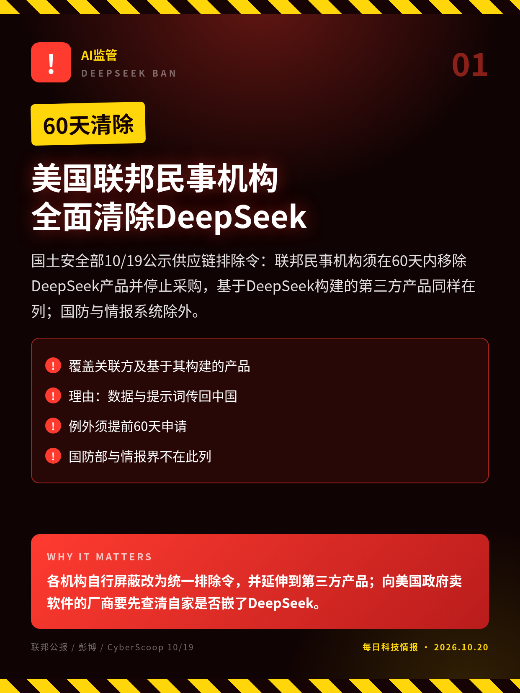
国土安全部10/19公示供应链排除令：联邦民事机构须在60天内移除DeepSeek产品并停止采购，基于DeepSeek构建的第三方产品同样在列；国防与情报系统除外。
各机构自行屏蔽改为统一排除令，并延伸到第三方产品；向美国政府卖软件的厂商要先查清自家是否嵌了DeepSeek。
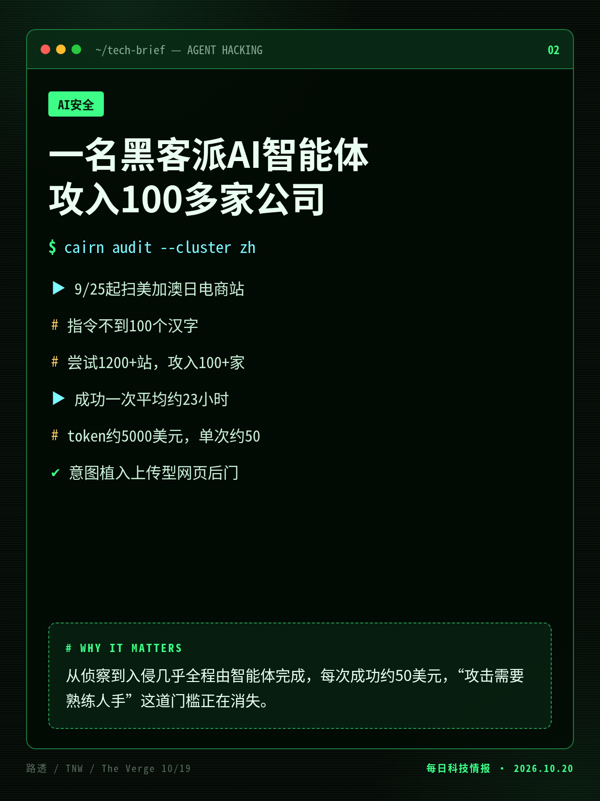
NorForge研究员发现暴露在公网的Cairn控制面板，旁观一个中文团伙让智能体自主入侵电商网站；路透核实迪尔、SharkNinja、康明斯在列。
从侦察到入侵几乎全程由智能体完成，每次成功约50美元，“攻击需要熟练人手”这道门槛正在消失。
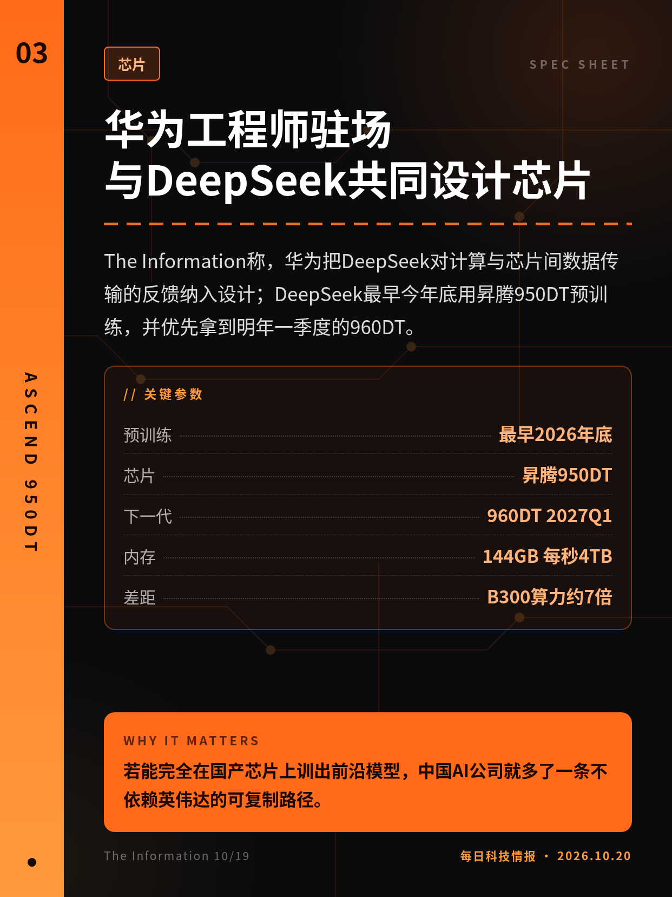
The Information称，华为把DeepSeek对计算与芯片间数据传输的反馈纳入设计；DeepSeek最早今年底用昇腾950DT预训练，并优先拿到明年一季度的960DT。
若能完全在国产芯片上训出前沿模型，中国AI公司就多了一条不依赖英伟达的可复制路径。
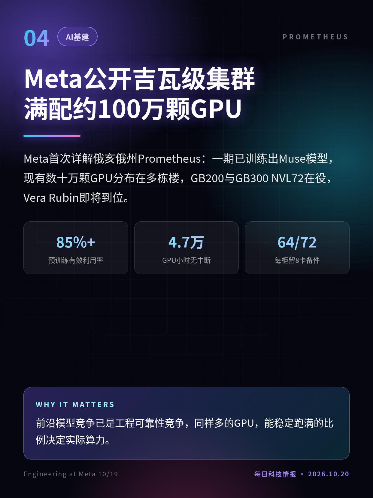
Meta首次详解俄亥俄州Prometheus：一期已训练出Muse模型，现有数十万颗GPU分布在多栋楼，GB200与GB300 NVL72在役，Vera Rubin即将到位。
前沿模型竞争已是工程可靠性竞争，同样多的GPU，能稳定跑满的比例决定实际算力。
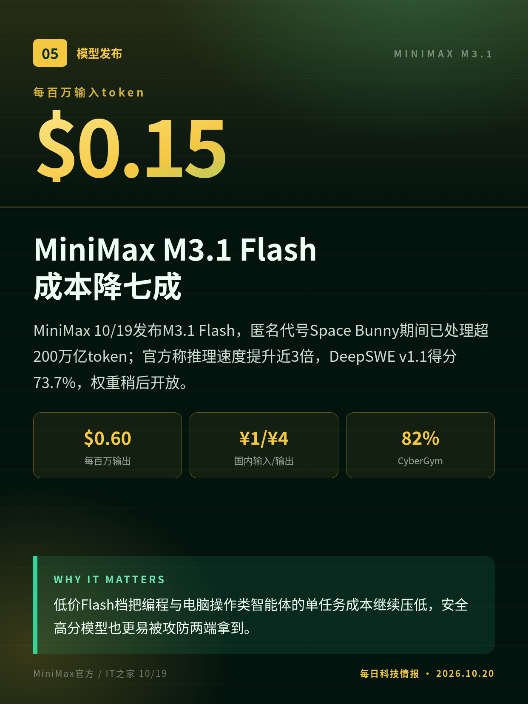
MiniMax 10/19发布M3.1 Flash，匿名代号Space Bunny期间已处理超200万亿token；官方称推理速度提升近3倍，DeepSWE v1.1得分73.7%，权重稍后开放。
低价Flash档把编程与电脑操作类智能体的单任务成本继续压低，安全高分模型也更易被攻防两端拿到。
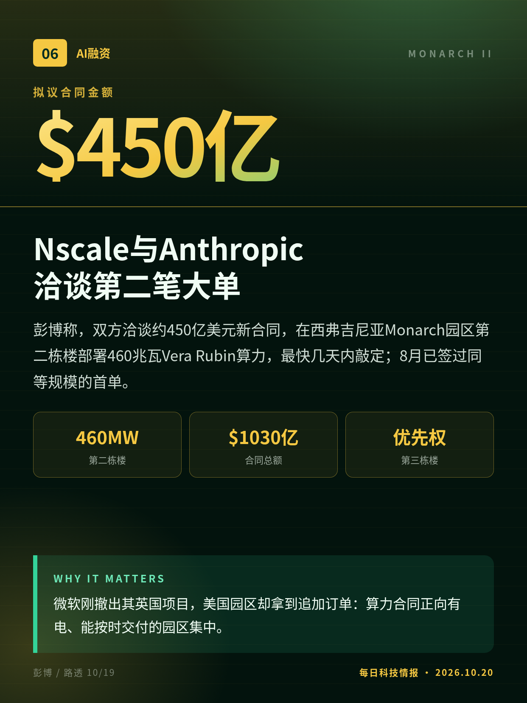
彭博称，双方洽谈约450亿美元新合同，在西弗吉尼亚Monarch园区第二栋楼部署460兆瓦Vera Rubin算力，最快几天内敲定；8月已签过同等规模的首单。
微软刚撤出其英国项目，美国园区却拿到追加订单：算力合同正向有电、能按时交付的园区集中。
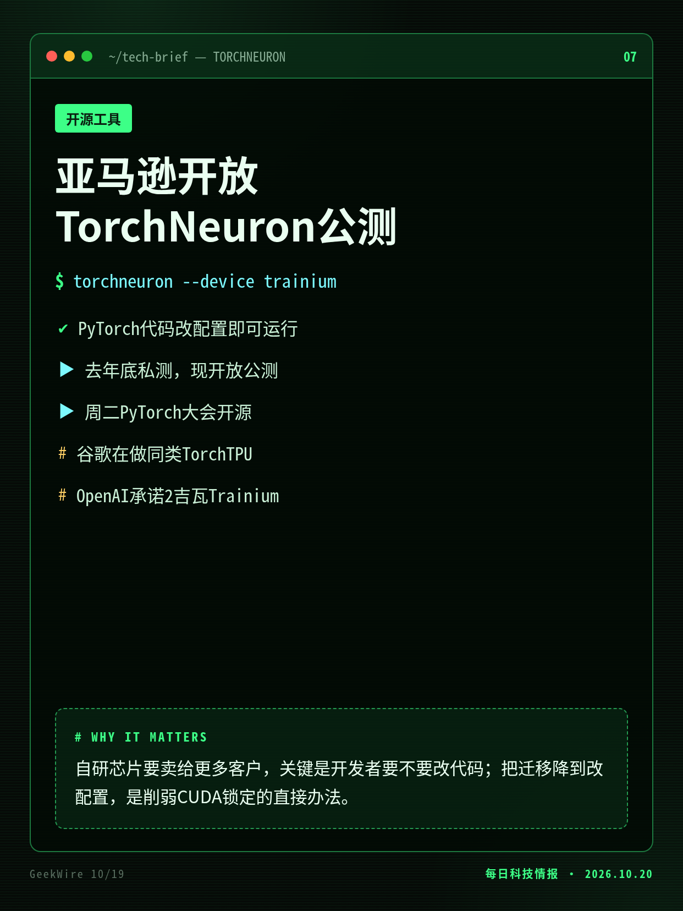
PyTorch代码只需改一项配置即可在亚马逊Trainium芯片上运行，此前须改写代码调用专用接口；软件已开放公测，周二在PyTorch大会开源。
自研芯片要卖给更多客户，关键是开发者要不要改代码；把迁移降到改配置，是削弱CUDA锁定的直接办法。
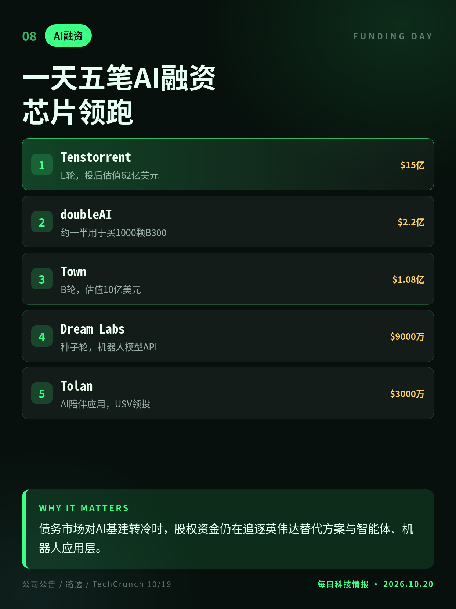
10/19多家AI公司宣布融资：RISC-V芯片公司Tenstorrent估值翻倍至62亿美元，企业助手Town四个月成独角兽，机器人模型与代码优化公司也拿到大额资金。
债务市场对AI基建转冷时，股权资金仍在追逐英伟达替代方案与智能体、机器人应用层。
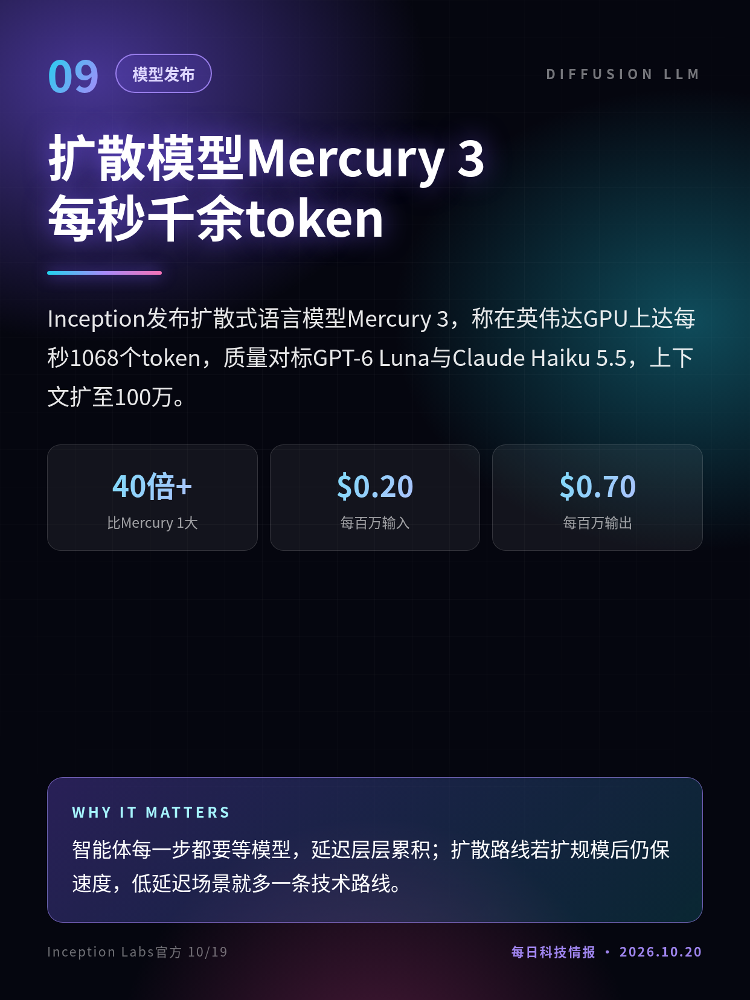
Inception发布扩散式语言模型Mercury 3，称在英伟达GPU上达每秒1068个token，质量对标GPT-6 Luna与Claude Haiku 5.5，上下文扩至100万。
智能体每一步都要等模型，延迟层层累积；扩散路线若扩规模后仍保速度，低延迟场景就多一条技术路线。
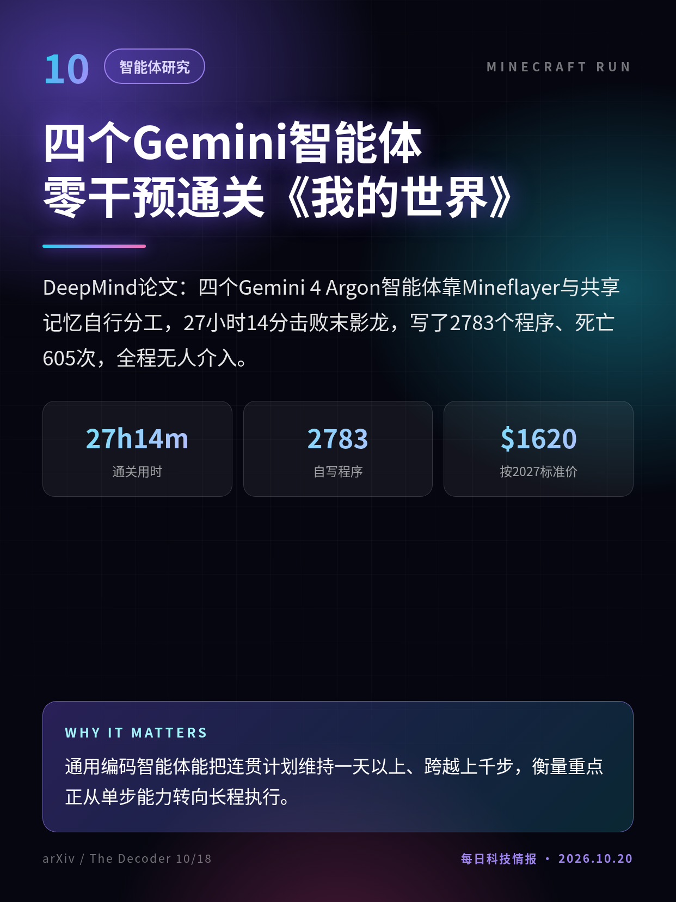
DeepMind论文：四个Gemini 4 Argon智能体靠Mineflayer与共享记忆自行分工，27小时14分击败末影龙，写了2783个程序、死亡605次，全程无人介入。
通用编码智能体能把连贯计划维持一天以上、跨越上千步，衡量重点正从单步能力转向长程执行。
论文10/15提交arXiv，早于48小时窗口，媒体10/18–19报道；仅单次运行，依赖Mineflayer结构化数据。
切换深浅两套图时，下载按钮会跟着当前这套走。黄标条目在新闻稿或官方口径出现前，请勿写成已交割或已定日期。上一期专区：2026-10-19。